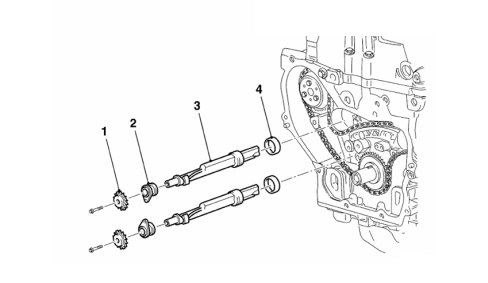

INTRODUCTION - ENGINE COMPONENTS DRIVE
- Path
- Descriptions > 10 ENGINE > 1092 ENGINE COMPONENT MISCELLANEOUS DRIVES > INTRODUCTION - ENGINE COMPONENTS DRIVE
- Kind
- system description
- Applies to
- engines: 2.2; all production periods
- Interactive page
- https://sloeber94.github.io/elrnDB-fCrm/en/#/194002117
Applies to: engines: 2.2; all production periods
COUNTER-ROTATING SHAFTS
The two countershafts with balancing counterweights in cast iron ensure significant noise and vibration containment. They are located in the engine block and driven by the countershaft drive chain. The countershaft drive teeth are fitted with damping rings that further reduce noise from the chain. The coolant pump drive forms part of this chain drive.
The countershafts turn at double speed in the opposite direction to ensure the engine turns smoothly.

1. Counter-rotating shaft gear
2. Counter-rotating shaft retaining bearing
3. Counter balance shafts
4. Counter-rotating shaft bearing